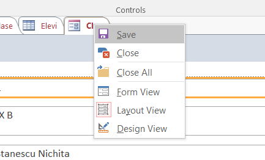

F I Ş A Nr. 4
Crearea unui formular
Formularele reprezintă ferestre ce permit adăugarea, modificarea, şi ştergerea datelor dintr-o bază de date. Formularele sunt special create astfel încât să permită, cât mai facil şi rapid, realizarea operaţiilor de mai sus.
Creăm o nouă bază de date numită
Baza de date va conţine un tabel
| Câmpul ID_Clasa este cheie primară |
 cu numele
cu numele | Câmpul ID_Elev este cheie primară |

| Câmpul ID_Clasa din tabelul |
Avem două tabele:
Selectăm tabelul
Din ribbon-ul Create alegeţi
Obţinem următorul formular care conţine toate câmpurile din ambele tabele:
Pentru a salva acest formular se dă click dreapta si Save:
.
Apoi se dă un nume formularului:
Cu acest instrument putem să facem orice operaţie de modificare fără a mai fi nevoie să deschidem ambele tabele. De exemplu, revenind la clasa IX B, apăsăm New Record  în tabelul
în tabelul
În acest moment nu numai că a fost introdus în tabel elevul Preda, dar el a fost asignat clasei IX B. Dacă deschideţi tabelul
În acest Formular nu se pot face numai adăugări de linii noi, dar și modificări, sortări, filtrări, s.a.m.d.
Similar creăm un formular pentru tabelul